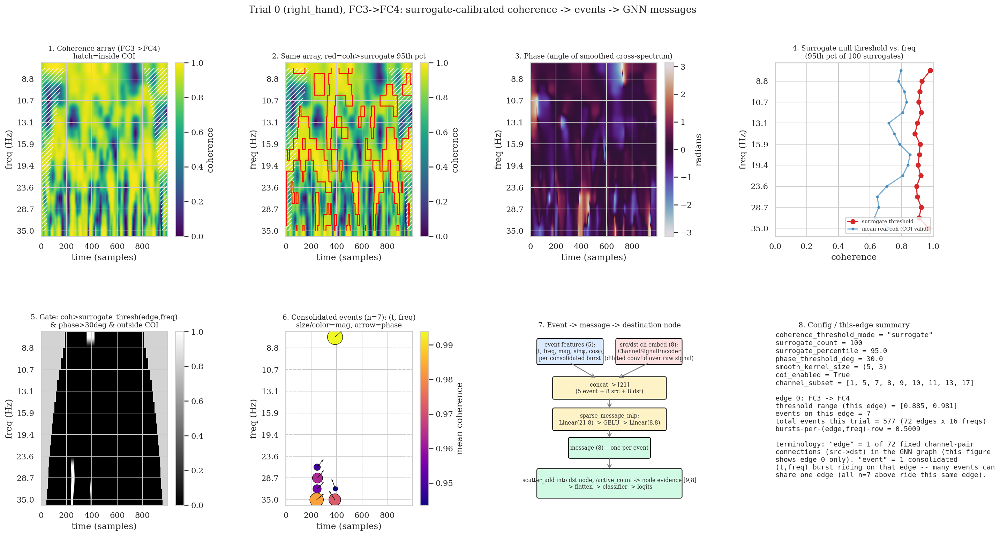
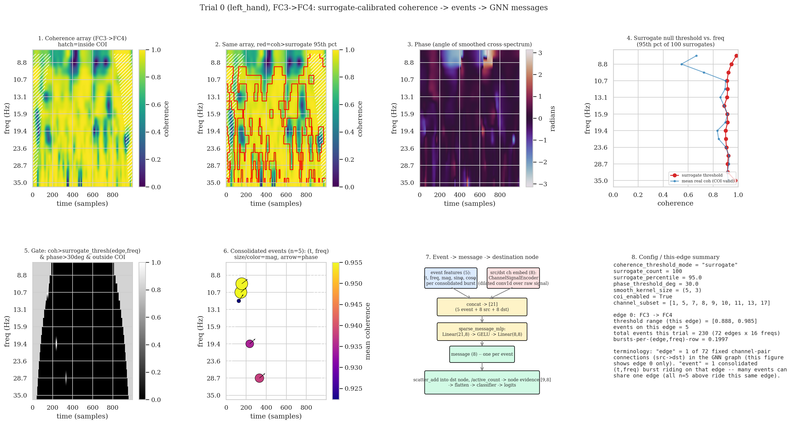
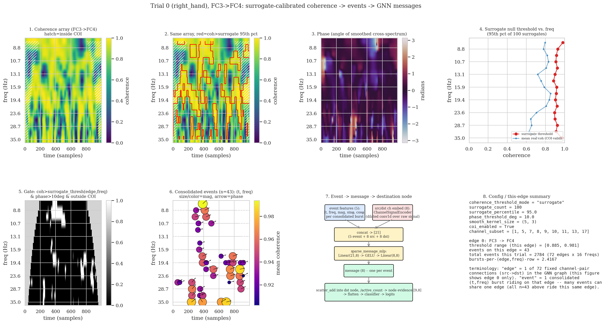
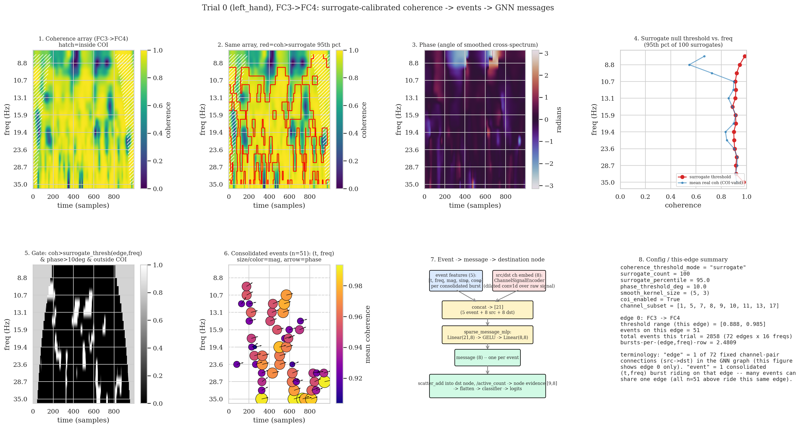

Subject 1 vs. subject 2 on the sparse-evidence GNN: event starvation, phase-threshold sensitivity, and where the mu-band signal goes missing
SparseEvidenceGNNClassifier,
event-based / sparse mode, BNCI2014-001), not the epilepsy dense-edge-GRU pipeline described
elsewhere on this site — a different codebase using the same coherence / surrogate-significance
/ phase-gate machinery. Numbers below are single-seed, from one debugging session, and read as an
exploratory comparison, not a validated finding. Included here mainly because the debug figures are
a clear real-data illustration of what surrogate-calibrated wavelet coherence looks like, independent
of which pipeline consumes it.
A canonical-sparse run on subject 2 alone scored close to chance: train 0.4817, test 0.4994, mean 0.4905. Subject 1 on the same architecture scores 0.801. Both subjects were compared on the same edge (FC3→FC4, one of 72 fixed channel-pair connections in the graph) and the same trial index, using a debug script that calls the real pipeline methods directly, so every panel below reflects exactly what training computes.


Event counts: starvation, not a flood
On this single edge the two trials look fairly similar — 7 consolidated events for subject 1 vs. 5 for subject 2. Trial-wide totals (all 72 edges × 16 frequencies, 5 trials each) tell a clearer story:
| subject | trial0 | trial1 | trial2 | trial3 | trial4 | mean bursts/row |
|---|---|---|---|---|---|---|
| 1 | 577 | 629 | 654 | 569 | 606 | ~0.53 |
| 2 | 230 | 316 | 453 | 204 | 301 | ~0.26 |
Subject 2 consolidates roughly half the events per trial that subject 1 does, consistently across all 5 trials checked. Notably, subject 2's raw coherence (figure panel 1 above) is more saturated than subject 1's, not less — nearly solid high coherence across most of the time/frequency plane. The surrogate null threshold tracks right along with it, though: [0.888, 0.985] for subject 2 on this edge vs. [0.885, 0.981] for subject 1, barely different, because the null is built from phase-randomized surrogates of that same signal. A more globally coherent, noise-like signal with less contrast produces an almost-as-elevated null. Net effect: fewer (edge, freq, time) cells clear the co-moving threshold and the phase gate and survive long enough to consolidate into an event. Subject 2 is not lacking coherence — it is lacking genuine, phase-consistent bursts that stand out from its own elevated noise floor.
Phase-threshold sensitivity
The canonical config gates on both coherence (via the surrogate threshold) and phase
(phase > phase_threshold_deg). Re-running both subjects at a looser
phase_threshold_deg=10 (vs. the canonical 30) isolates which gate is responsible for
subject 2's deficit:


| subject | mean bursts/row @30° | mean bursts/row @10° | ratio to subj1 @30° | ratio to subj1 @10° |
|---|---|---|---|---|
| 1 | 0.527 | 2.443 | 1.00 | 1.00 |
| 2 | 0.261 | 2.542 | 0.50 | 1.04 |
Subject 2's event deficit essentially disappears at the looser phase threshold — at 10°, subject 2 is no longer the outlier, sitting almost exactly at parity with subject 1. This points at the phase gate specifically, not the coherence/surrogate gate, as the mechanism behind subject 2's starvation at the canonical 30° setting: subject 2 appears to have plenty of coherent, statistically-significant activity whose phase just does not concentrate as tightly as subject 1's does, so a strict phase cutoff disproportionately discards it.
Where in frequency the mu-band signal goes missing
The phase panel for subject 2 (panel 3, figures above) shows two visually salient regions, both in the mu band (8–9 Hz). Checked directly against the per-cell gate arrays for edge FC3→FC4, trial 0, phase_threshold_deg=30:
| freq | surrogate threshold | cells passing phase>30° | cells passing coh>threshold | cells passing both |
|---|---|---|---|---|
| 9.7 Hz | 0.922 | 131 | 199 | 10 |
| 8.8 Hz | 0.946 | 112 | 16 | 0 |
| 8.0 Hz | 0.985 | 128 | 0 | 0 |
The two lowest mu-band bins (8.0, 8.8 Hz) have more phase-consistent cells than any other frequency in the spectrum — the two bright regions in the phase panel. But at 8.0 Hz, zero cells in the entire trial clear the coherence threshold (mean coherence where the phase gate passes is 0.705 against a 0.985 threshold), so none of that phase-locked mu activity survives into an event. The same breakdown on subject 1's edge:
| subj 1 @ 8.8Hz | subj 1 @ 8.0Hz | subj 2 @ 8.8Hz | subj 2 @ 8.0Hz | |
|---|---|---|---|---|
| threshold | 0.929 | 0.981 | 0.946 | 0.985 |
| coh-passing cells | 234 | 90 | 16 | 0 |
| both | 0 | 62 | 0 | 0 |
This refines the event-count finding above: it is not just that subject 2 has fewer events overall — the mu band specifically, the band most associated with motor imagery, is where subject 2 loses the most phase-consistent activity to the coherence-significance filter, while subject 1 loses it at one adjacent bin but keeps it at the next.
Open items
Whether the phase=10° event-density recovery for subject 2 actually improves classification accuracy was not tested here — this comparison only covers event counts, not a full training run at the looser setting. A separate, near-chance subject (subject 4) was checked in the same session and shows the opposite pattern — more events than subject 1, not fewer — suggesting subject 2 and subject 4 are likely two distinct failure modes rather than one general "low-quality subject" story, though that is also not confirmed. All numbers above are single-seed.